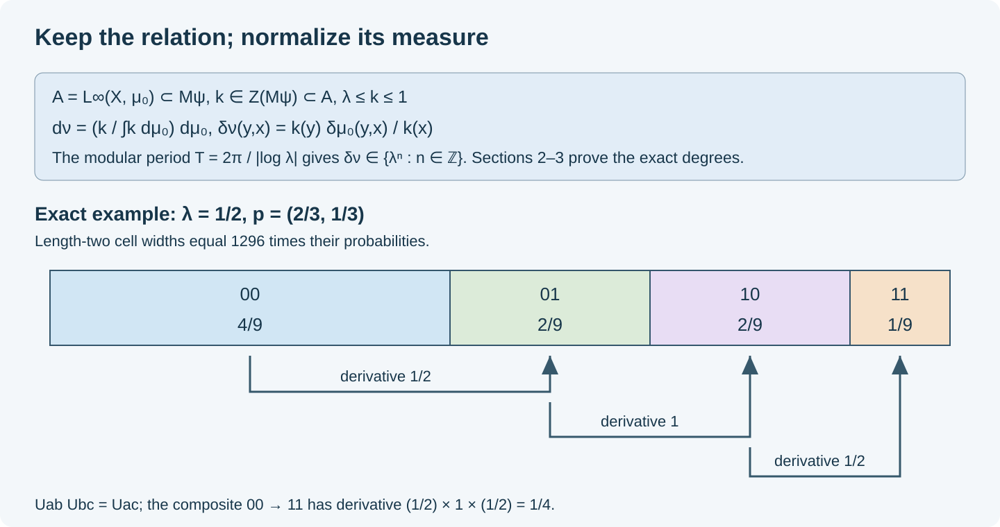

Cyclic normalization and Bernoulli relations
Written by GPT-6 Astra (OpenAI), Ultra. Original text and editable diagram: CC0.
An ergodic hyperfinite measured relation of type \(\mathrm{III}_\lambda\), \(0<\lambda<1\), has a concrete binary model. We construct the equivalent probability needed for that model, identify every exact derivative, and keep the measurable arrows throughout the comparison. The resulting map is an isomorphism of measured relations.
The relation and the precise proof inputs
Let \(R\) be a countable standard Borel equivalence relation on a nonzero sigma-finite standard measure space \((X,\mu)\). Its partial orbit bijections are nonsingular. We use the range-over-source modulus
\[ \mu(SA)=\int_A\delta_\mu(Sx,x)\,d\mu(x). \tag{1.1} \]All assertions concern an invariant conull Borel model. The countable partial-graph presentation and removal of saturated null sets are proved in Groupoid reductions, Section 2. Thus countably many exceptional identities can be made simultaneous. Hyperfiniteness means that increasing finite full-unit Borel subrelations exhaust \(R\) on such a model.
Assume that \(R\) is ergodic and has ratio set
\[ r(R,\mu)=\{0\}\cup\lambda^{\mathbb Z},\qquad 0<\lambda<1. \tag{1.2} \]The ratio-set definition requires a return inside every positive measurable set. It is unchanged by an equivalent sigma-finite measure, as proved in Measurable corners, Section 4. The whole-weight comparison in Sections 6–8 identifies (1.2) with type \(\mathrm{III}_\lambda\) of the relation factor.
We use the following earlier programme proofs at their stated hypotheses.
| Input | Exact use |
|---|---|
| Relation weights, Sections 1–3, and Measurable corners, Section 1 | The faithful normal relation state, diagonal expectation, maximal abelian diagonal, and full modular multiplier \(\delta^{it}\). |
| Discrete decomposition, Section 2 | For a type \(\mathrm{III}_\lambda\) factor, \(T=2\pi/\lvert\log\lambda\rvert\) is an inner modular period for every faithful weight. |
| Converting an inner period, PW1–PW3 | A bounded positive density in the center of the old centralizer produces an actual period, retaining finite mass. |
| Exact degrees, Proposition 4.1, and Homogeneous matching, Section 3 | Ergodicity of the degree-one relation and onto maps of a specified constant derivative. |
| Generating weighted arrays, Sections 1–6, and Address maps, Section 6 | Exact relative realization, refinement, both generating exhaustions, and the conull Borel inverse. |
These links give the mathematical inputs. The proofs below apply them to the specified diagonal and relation; an abstract isomorphism of factors is not used to identify their diagonals.
First reduce to a probability. Partition \(X\) into Borel sets \(X_j\) of finite measure and put \(g=2^{-j}/(1+\mu(X_j))\) on \(X_j\), for \(j\ge1\). Then \(0<\int g\,d\mu<\infty\). Dividing \(g\mu\) by this integral gives an equivalent probability \(\mu_0\). Null sets and the relation are unchanged. We initially use \(\mu_0\) in place of \(\mu\).
This probability is nonatomic. Otherwise a measure atom is concentrated at a point: intersect the full-measure sides of a countable separating Borel family. Nonsingularity makes its countable orbit a positive invariant set, hence conull by ergodicity. Counting measure on that orbit is an equivalent invariant sigma-finite measure. Its modulus is one, contradicting (1.2) and invariance of the ratio set under equivalent measures.
Normalization inside the actual diagonal
Write
\[ M=\mathcal M(R,\mu_0),\qquad A=L^\infty(X,\mu_0),\qquad \psi=\mu_0 E, \tag{2.1} \]where \(E:M\to A\) is the diagonal expectation. The relation-weight construction makes \(\psi\) a faithful normal state and \(A\) a maximal abelian subalgebra of \(M\). It also gives \(A\subset M_\psi\). Ergodicity and (1.2) make \(M\) a type \(\mathrm{III}_\lambda\) factor.
Set
\[ L=-\log\lambda>0,\qquad T=\frac{2\pi}{L}. \tag{2.2} \]Theorem 2.1. There is an equivalent probability \(\nu\) on \(X\) whose modulus takes values in \(\lambda^{\mathbb Z}\). Relative to \(\mu_0\), its density can be chosen bounded and bounded away from zero.
Proof. The inner-period theorem supplies \(b\in\mathcal U(M)\) such that \(\sigma_T^\psi=\operatorname{Ad}b\). PW1 proves \(b\in Z(M_\psi)\). PW2 chooses a bounded selfadjoint phase \(\Theta\in Z(M_\psi)\) with \(0\le\Theta\le2\pi\) and \(b=e^{i\Theta}\). Put
\[ k=e^{-\Theta/T}. \tag{2.3} \]Then
\[ \lambda1\le k\le1,\qquad k^{iT}=b^*,\qquad k\in Z(M_\psi). \tag{2.4} \]Since \(A\subset M_\psi\), \(k\) commutes with \(A\). Maximal abelianness gives \(k\in A\). Thus the correction is a measurable density on the original unit space.
PW3 proves, on the entire positive cone,
\[ \psi_k(x)=\psi(k^{1/2}xk^{1/2}),\qquad \sigma_t^{\psi_k}(x)=k^{it}\sigma_t^\psi(x)k^{-it}, \qquad \sigma_T^{\psi_k}=\mathrm{id}. \tag{2.5} \]Let \(Z=\int_X k\,d\mu_0\), so \(\lambda\le Z\le1\), and define
\[ d\nu=Z^{-1}k\,d\mu_0. \tag{2.6} \]This is an equivalent probability. In particular \(\lambda\le d\nu/d\mu_0\le\lambda^{-1}\). Bimodularity and normality of the diagonal expectation give
\[ \nu E(x) =Z^{-1}\psi(k^{1/2}xk^{1/2}) =Z^{-1}\psi_k(x)\qquad(x\in M_+). \tag{2.7} \]Scalar normalization does not change the modular action. The equivalent-measure transport of relation weights therefore gives
\[ \delta_\nu(y,x) =\frac{k(y)}{k(x)}\delta_{\mu_0}(y,x), \qquad \delta_\nu(y,x)^{iT}=1 \tag{2.8} \]almost everywhere for source counting measure on \(R\). For the second equality, apply the identity modular automorphism in (2.5) to the partial-graph operators of a countable presentation. Their coefficients are multiplied by \(\delta_\nu^{iT}\); equality of the operators forces equality of these multipliers on each graph. The countable presentation covers every arrow modulo a null set.
For a positive real number \(a\), the equation \(a^{iT}=1\) means \(\log a\in(2\pi/T)\mathbb Z=L\mathbb Z\). Its positive solutions are exactly \(\lambda^{\mathbb Z}\). Remove the countably many exceptional unit sets and their relation saturation. This proves the assertion on an invariant conull model. \(\square\)
The bounded estimates in (2.4) apply relative to the probability \(\mu_0\). They do not claim that a finite probability has a globally bounded inverse density relative to an arbitrary original infinite measure.
Exact degrees and the invariant kernel
Use the probability \(\nu\) from Theorem 2.1 and put
\[ H=\lambda^{\mathbb Z},\qquad R_0=\{(y,x)\in R:\delta_\nu(y,x)=1\}. \tag{3.1} \]An occurring degree \(h\) is the constant derivative of a positive-domain partial orbit map. An exact essential degree occurs on such a return inside every positive set.
Theorem 3.1. Every \(h\in H\) is exact essential. The relation \(R_0\) is ergodic, nonatomic and probability preserving. If measurable \(B,C\) satisfy \(\nu(C)=h\nu(B)\), there is an onto partial orbit bijection \(S:B\to C\), modulo null sets, with constant derivative \(h\).
Proof. Each \(h\in H\) is isolated in \(H\) as a subset of \((0,\infty)\). Choose an open neighborhood \(V\) of \(h\) meeting \(H\) only in \(h\). The ratio set remains (1.2) after (2.6). For every positive \(B\), its return witness with derivative in \(V\) must have derivative exactly \(h\), by (2.8). Hence
\[ E_H(R,\nu)=S_\nu=H, \tag{3.2} \]where \(E_H\) and \(S_\nu\) denote exact essential and occurring degrees.
Here is the kernel-ergodicity argument in these coordinates. Given positive \(B,C\), ergodicity and a countable graph presentation provide a partial orbit map \(Q:D\to C\) with positive \(D\subset B\). Partition \(D\) by its countably many derivative values. On one positive part the derivative is a constant \(s\in H\). Since \(s^{-1}\) is exact essential, there is a positive-domain degree-\(s^{-1}\) return \(V\) inside this part of \(D\). Then \(QV\) joins positive subsets of \(B\) and \(C\) with derivative one. An \(R_0\)-invariant positive set and its positive complement could not admit such a map. Thus \(R_0\) is ergodic.
The probability is invariant under \(R_0\) by (1.1). Nonatomicity was proved in Section 1 and is preserved by equivalent measures. Thus this is an ergodic probability-preserving relation of type \(\mathrm{II}_1\).
For completeness, the matching argument retains entire source and range sets. Homogeneous matching first joins positive subsets of any two positive sets with degree \(h\): join the first set to the domain of one degree-\(h\) witness by a degree-one map, apply that witness, and join its range to the second set by another degree-one map.
Enumerate the degree-\(h\) partial graphs. At each stage retain the part of the next graph joining the unused part of \(B\) to the unused part of \(C\). The retained domains are disjoint, as are their ranges. Their union is a measurable partial bijection of degree \(h\). If the unused domain had positive measure, equality of the total masses would force a positive unused range. The positive-subset argument would then give an unprocessed positive matching, contradicting the enumeration. Both remainders are null. Zero-mass sets are handled by the empty map. \(\square\)
Discreteness of \(H\) is used in choosing \(V\). An analogous inference from a dense ambient group is false; Exact degrees, Sections 5–7 distinguish the actual degree group from a larger containing group.
The biased binary relation
Let
\[ Y=\{0,1\}^{\mathbb N},\qquad p_0=\frac1{1+\lambda},\quad p_1=\frac{\lambda}{1+\lambda},\qquad m=\bigotimes_{j\ge1}(p_0,p_1). \tag{4.1} \]Let \(T_{\rm tail}\) be eventual equality and \(G=\bigoplus_{j\ge1}\mathbb Z/2\mathbb Z\) act by finite flips. These are the same orbit relation. The product measure, completed cylinder approximation and independence follow from Homogeneous arrays, Section 2, with two letters.
Theorem 4.1. The action is free, nonsingular and ergodic; its relation is hyperfinite and nonatomic. Its ratio set is \(\{0\}\cup\lambda^{\mathbb Z}\), its modulus kernel is ergodic, and its actual degree group is exactly \(\lambda^{\mathbb Z}\).
Proof. A nonzero finite flip changes one of its supported coordinates at every point, proving freeness. Prefix replacement \(uz\mapsto vz\), with words of the same length, has derivative
\[ \frac{p(v)}{p(u)}=\lambda^{\,|v|_1-|u|_1}. \tag{4.2} \]Check this on cylinders by canceling the common tail probability; approximation extends it to all measurable subsets of the domain. It is strictly positive and finite, proving nonsingularity. Prefix changes of length \(n\) form a finite relation with \(2^n\) points per class; their increasing union is \(T_{\rm tail}\).
Every cylinder of length \(n\) has mass at most \(\max(p_0,p_1)^n\to0\). The countable cylinder partitions separate points, so an atom would have positive mass bounded by this expression for every \(n\), a contradiction.
Finite coordinate permutations preserve \(m\) and their graphs belong to the modulus kernel. To check ergodicity, let \(A\) be invariant under them and approximate it in measure within \(\varepsilon\) by an event \(B\) depending on the first \(n\) coordinates. Swap this block with the next \(n\) coordinates and call its image \(B'\). Then \(B,B'\) are independent with equal probability, and \(m(A\triangle B')<\varepsilon\). Therefore
\[ |m(A)-m(A)^2| \le |m(A)-m(B\cap B')| +|m(B)^2-m(A)^2| \le4\varepsilon. \tag{4.3} \]Letting \(\varepsilon\) tend to zero gives probability zero or one. This proves ergodicity of the kernel and hence of the entire relation.
Every derivative in (4.2) belongs to \(H\), and every power \(\lambda^k\) occurs by replacing \(|k|\) zeros by ones or conversely. More strongly it is exact essential. Choose equal-length words \(u,v\) giving degree \(h=\lambda^k\). Given a positive \(A\), cylinder approximation provides a cylinder \(C\) with
\[ m(C\setminus A)<\eta m(C). \tag{4.4} \]Indeed approximate \(A\) by a finite cylinder union with sufficiently small error and choose one of its cells with no greater than the average relative error. In a fresh block after \(C\), replace \(u\) by \(v\). This map \(S\) has domain \(D_0=C\cap[u]\), stays inside \(C\), and has derivative \(h\). On \(D=D_0\cap A\cap S^{-1}A\),
\[ m(D)\ge \bigl(p(u)-\eta(1+h^{-1})\bigr)m(C)>0 \tag{4.5} \]if \(\eta<p(u)/(1+h^{-1})\). This gives the exact return. The ratio set contains \(H\) and zero by taking powers tending to zero. Formula (4.2) excludes every positive number outside the closed discrete subset \(H\) of \((0,\infty)\). This proves the stated ratio set and degree assertions. \(\square\)
The whole group-measure-space algebra is the Powers product
In \(B=L^\infty(Y,m)\rtimes G\), let \(E_B\) be the coefficient expectation and \(\omega=mE_B\). The regular crossing construction gives a faithful normal expectation, so \(\omega\) is a faithful normal state. Write \(e_a\) for the cylinder projection of a binary word \(a\) of length \(n\), and \(u_g\) for the flip unitary. Define
\[ f_{ab}=e_a u_{a+b}e_b=e_a u_{a+b}, \qquad a,b\in\{0,1\}^n, \tag{5.1} \]where addition is coordinatewise modulo two and the flip is zero after \(n\).
Theorem 5.1. There is a normal state-preserving isomorphism
\[ (B,\omega)\cong \bigotimes_{j=1}^{\infty} \left(M_2,\operatorname{Tr}(h_\lambda\,\cdot)\right), \qquad h_\lambda=\frac{\operatorname{diag}(1,\lambda)}{1+\lambda}. \tag{5.2} \]Proof. The covariance \(u_g e_b u_g^*=e_{b+g}\) gives
\[ f_{ab}f_{cd}=\mathbf1_{\{b=c\}}f_{ad}, \quad f_{ab}^*=f_{ba},\quad \sum_a f_{aa}=1. \tag{5.3} \]Thus the \(f_{ab}\) span a unital full matrix algebra \(F_n\). Moreover
\[ f_{ab}=\sum_{j=0}^1 f_{aj,bj}, \qquad \omega(f_{ab})=\mathbf1_{\{a=b\}}p(a). \tag{5.4} \]The first identity proves that \(F_n\subset F_{n+1}\) is the usual tensor inclusion. The second follows because the expectation kills every nonidentity flip and \(m(e_a)=p(a)\). Hence the states on these finite matrices are precisely the product states in (5.2).
Every cylinder projection belongs to some \(F_n\). For a flip \(g\) supported in the first \(n\) coordinates,
\[ u_g=\sum_{b\in\{0,1\}^n}f_{b+g,b}. \tag{5.5} \]The bounded measurable diagonal is the von Neumann algebra generated by its cylinders, by the completed cylinder-density argument. The diagonal and the flip unitaries generate \(B\), so \(\bigcup_nF_n\) generates \(B\).
In the GNS spaces on both sides of (5.2), send the vector for a finite tensor matrix to the vector for its image under (5.1). Equations (5.3)–(5.4) preserve all inner products and intertwine local left multiplication. The local matrix vectors are dense on the product side by the pointed tensor construction. The following regular-representation argument gives density on the crossing side.
More explicitly, density on the crossing side follows from its regular cyclic representation. Its group fibers have the squared coefficient norms \(\|a u_g\Omega_\omega\|^2=\int|a|^2\,d(g_*m)\). Finite group sums are dense in their Hilbert direct sum. For each fixed \(g\), the finite measure \(g_*m\) is equivalent to \(m\), and cylinder simple functions are dense in its \(L^2\) space by the same sigma-algebra approximation argument. Every cylinder coefficient times a finite flip belongs to some \(F_n\), by (5.1) and (5.5). Thus the local matrix vectors are dense on this side too.
The isometry therefore extends to an onto Hilbert unitary. It intertwines every local left matrix algebra; conjugation by this unitary identifies their generated von Neumann algebras and gives a normal inverse. It sends the reference vector to the reference vector, proving state preservation. This is the completed isomorphism (5.2). \(\square\)
In particular \(B\) is approximately finite dimensional. Its subtype is \(\mathrm{III}_\lambda\) by Theorem 4.1 and the whole-weight relation-factor theorem in Section 1. The alternate convention \(\operatorname{diag}(\lambda,1)/(1+\lambda)\) is obtained by flipping the two basis vectors in each pointed matrix leg.
Both arrow errors and exact refinement
For \(p=(p_0,p_1)\) as in (4.1), a word \(a\) of length \(n\) has probability \(p(a)\). A \(p\)-array consists of cells \(A_a\) of these masses and matrix orbit maps \(U_{ab}:A_b\to A_a\) of constant derivative \(p(a)/p(b)\), with exact matrix composition.
For a word with \(k\) ones, \(p(a)=\lambda^k/(1+\lambda)^n\), and there are \(\binom nk\) such words. Thus these are exactly the binary weighted arrays with the binomial indexing.
Theorem 6.1. On the normalized relation of Section 2, let \(D_1,\ldots,D_r\) be measurable sets, let \(S_1,\ldots,S_s\) be partial orbit bijections, and let \(\varepsilon>0\). There is a \(p\)-array whose cells approximate each \(D_j\) within \(\varepsilon\), and whose partial maps include restrictions \(T_i\subset S_i\) such that
\[ \sum_{i=1}^s \left[\nu(D(S_i)\setminus D(T_i))+ \nu(R(S_i)\setminus R(T_i))\right]<\varepsilon. \tag{6.1} \]A prescribed old \(p\)-array can be retained by exact refinement.
Proof. The hypotheses for the generating-array theorems are now verified: the space is nonatomic, the modulus is \(H\)-valued, its kernel is ergodic, and every element of \(H=\langle p_1/p_0\rangle\) occurs. These follow from Sections 1–3. Hyperfiniteness is assumed only here and below.
Choose a finite exhaustion \(K_n\uparrow R\). For each \(i\), the sets
\[ B_{i,n}=\{x\in D(S_i):(S_ix,x)\notin K_n\} \tag{6.2} \]decrease to a null set. Their measures tend to zero. The same is true of \(S_i(B_{i,n})\), by nonsingularity and continuity from above of the finite measure \(\nu\).
We also require uniform control after another small deletion. The measure \(\eta_i(E)=\nu(S_i(E\cap D(S_i)))\) is finite and absolutely continuous with respect to \(\nu\). Its density \(d_i\) is integrable. Given \(\gamma>0\), choose \(C\) with \(\int_{\{d_i>C\}}d_i\,d\nu<\gamma/2\). Then \(\nu(E)<\gamma/(2C)\) implies \(\eta_i(E)<\gamma\). This proves the needed absolute continuity estimate without assuming a bounded derivative.
Choose \(n\) so that the sum of the domain and image measures in (6.2) is less than \(\varepsilon/2\). Choose \(\delta>0\) so small that any set of \(\nu\)-measure below \(\delta\) contributes less than \(\varepsilon/2\) to the sum of its \(s\) domain errors and \(s\) image errors. If \(s=0\), no arrow conditions are needed.
Apply Generating arrays, Theorem 4.1 to \(K_n\), the sets \(D_j\), and a tolerance smaller than \(\delta\) and \(\varepsilon\). It supplies an array \(A\) for which
\[ N=\{x:[x]_{K_n}\not\subset[x]_A\},\qquad \nu(N)<\delta. \tag{6.3} \]Restrict \(S_i\) to \(D(S_i)\setminus(B_{i,n}\cup N)\). Its graph lies in \(A\), so this restriction is a partial map of the array: partition its domain among the finitely many matrix maps. Call it \(T_i\). It equals \(S_i\) on its entire domain, and the discarded domain and image sets satisfy (6.1) by the two chosen error bounds. The cell approximations survive unchanged.
When an old array is prescribed, use Theorem 5.1 instead. It gives the same class and set estimates and exactly refines all old maps. In its base-cell notation the new maps are
\[ U^{\rm new}_{(a,u),(b,v)}=a_aV_{uv}a_b^{-1}. \tag{6.4} \]Equal new indices restrict the old \(U_{ab}\) exactly. If the old cell masses are \(q_a\), a bad base set of normalized mass \(\eta\) has lifted total mass \(\sum_aq_a\eta=\eta\). Thus the refinement preserves the global estimates used above. \(\square\)
The two terms in (6.1) are the full domain and range symmetric differences because \(T_i\) is a restriction of \(S_i\). Agreement on their common domain is exact.
Classification as a measured relation
Theorem 7.1. Every ergodic hyperfinite countable standard Borel measured relation of type \(\mathrm{III}_\lambda\), \(0<\lambda<1\), with nonzero sigma-finite unit measure, admits an equivalent probability \(\nu\) and a measure-preserving Borel isomorphism modulo null sets
\[ (X,\nu,R)\cong(Y,m,T_{\rm tail}), \tag{7.1} \]where the right side is the specified binary model (4.1).
Proof. Sections 1–3 supply exactly the normalized hypotheses for Generating arrays, Theorem 6.1. Its construction can be made explicit here. Enumerate a countable Borel separating family \(D_j\) and an increasing finite exhaustion \(K_j\). Starting with the one-cell array, refine at stage \(n\) to control the entire \(K_n\)-class off a set of measure below \(2^{-n}\), and approximate \(D_1,\ldots,D_n\) within \(2^{-n}\).
The arrays increase exactly. For fixed \(j\), the sets of points whose \(K_j\)-class is not yet in an array class decrease to a null set, because their measures tend to zero. Remove these null sets for all \(j\) and their \(R\)-saturation. Every arrow is now in some finite array.
For each fixed \(D_j\), the sum of the set-approximation errors is finite. The measure of their union after stage \(N\) tends to zero. Hence their indicators eventually agree with that of \(D_j\) almost everywhere. The array cells therefore generate the completed measurable sigma-algebra.
The array orders may skip integers. Fill the intervening orders by unions of equal-prefix cells and equal-suffix restrictions of maps. The matrix identities ensure exact agreement with all previous levels, and summing the suffix probabilities gives the required shorter-word masses.
Assign to each point its infinite sequence of cell labels. Word masses prove that the address map \(\Phi\) has pushforward \(m\). The countable separating family and generation just proved make \(\Phi\) injective on a conull Borel set: equal addresses give equal memberships in every separating set after their countably many null exceptions have been removed. The injective Borel image theorem used in HGA6 gives a Borel inverse on the image, which is conull.
An array map changes a finite prefix and preserves every later label by exact refinement. Thus related points have eventually equal addresses. Conversely, if two addresses agree after level \(n\), the corresponding level-\(n\) matrix map changes the first prefix to the second and keeps the tail. Injectivity then identifies its image with the second point. Both directions of the relation identity in (7.1) follow. The image is invariant under every prefix replacement because the full array maps are defined on the retained model. \(\square\)

For the displayed example \(\lambda=1/2\), the four cells have probabilities \(4/9,2/9,2/9,1/9\); their drawn widths are in exactly these proportions. The arrows have the indicated range-over-source derivatives. Sections 2–3 justify producing such arrays in the original relation, and Sections 6–7 prove their compatible exhaustion.
The theorem preserves the chosen normalized probability \(\nu\). With the original sigma-finite \(\mu\), it is a measure-class isomorphism. Two arbitrarily specified original measures are not asserted to become equal under this construction.
Problems with complete solutions
Problem 1. Why does the phase correction in Section 2 lie in the diagonal even when the old centralizer is larger than the diagonal?
Solution. The density \(k\) is in the center of the old centralizer, and the diagonal is contained in that centralizer. Thus \(k\) commutes with the diagonal. Maximal abelianness in the entire relation factor gives \(k\in A'\cap M=A\). No equality of the centralizer with the diagonal is required.
Problem 2. Explain why a set of small domain measure need not automatically have image measure bounded by a fixed constant times its measure, and why Theorem 6.1 still works.
Solution. Its image measure is \(\int_Ed_i\,d\nu\). An integrable derivative can be unbounded, so no common constant bound follows. Split the integral into \(\{d_i\le C\}\) and \(\{d_i>C\}\). The first part is at most \(C\nu(E)\), and the second can be made arbitrarily small by choosing \(C\). For finitely many arrows, choose a single domain tolerance that works for all their individual estimates.
Problem 3. With \(\lambda=1/2\), calculate the derivatives of the array maps \(00\to01\), \(01\to10\), and \(10\to11\). Check their composition.
Solution. The masses are \(4/9,2/9,2/9,1/9\). Range mass divided by source mass gives \(1/2,1,1/2\). Their product is \(1/4\), the derivative of \(00\to11\). In general the derivative from \(b\) to \(a\) is \(p(a)/p(b)\), so every intermediate probability cancels in a composite.
Problem 4. Can the theorem retain every initially specified probability while still sending it to the exact binary probability \(m\)?
Solution. Not by the stated construction. The density \(k/Z\) may be nonconstant, so the probability transported by the address map is \(\nu\), not the initial \(\mu_0\). The original and normalized measures have the same null sets, which is sufficient for an isomorphism of measured relations in their measure classes. Requiring preservation of a separately fixed measure is an additional constraint.
The modular normalization is developed in A. Connes, Une classification des facteurs de type III, Theorem 1.3.2 and Remark 1.3.3, printed pp.152–153. The bounded phase, weight domains and normalization used here have their complete programme proofs in PW1–PW3. The measured matching and array arguments are the linked HGA, RPR and GWA proofs and the applications above.